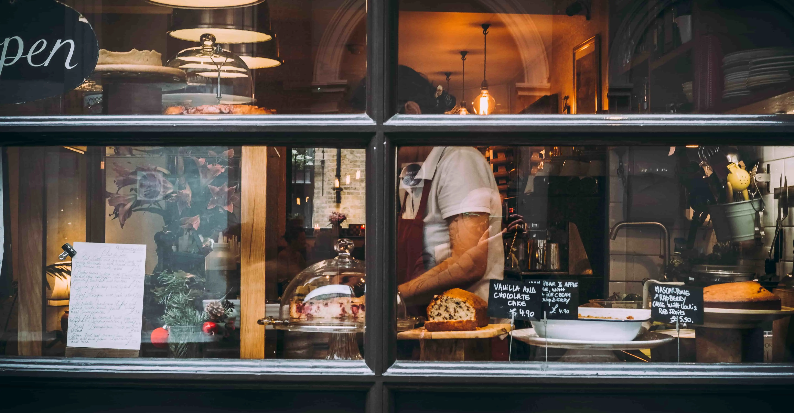
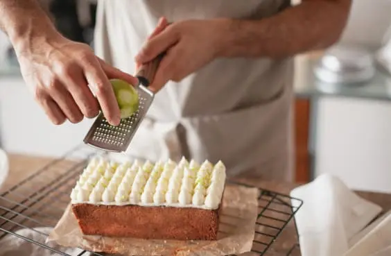
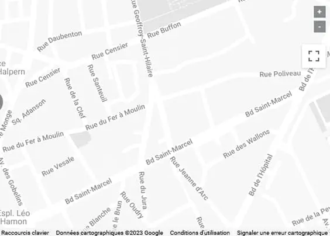

Phillipe Lugnac
Phillipe Lugnac
Phillipe Lugnac
Phillipe Lugnac

Philippe Lugnac s’amuse autant à inventer qu’à réinventer, faire briller le répertoire classique parisien, visiter de nouvelles terres avec attention et donner de l’éclat aux soirées festives qui se prolongent.

Créations originales, grands classiques revisités, gâteaux de voyage ou pour vos événements, découvrez le catalogue de nos produits disponibles en boutique...
Nos dernières parutions dans la presse et sur internet.

4 rue Censier, Paris 7
Aux PrésBoulevard de l’Hôpital, Paris 15
Le Chardenoux15 rue du Jura, Paris 11
Pour toute réservation, nous vous invitions à contacter directement le restaurant par téléphone.
* champs obligatoires.
Nom / Prénom*
Adresse e-mail*
Message*
Siège Lugnac
4 rue Censier, Paris 7
+33 (0)1 42 56 11 26
Mentions légales
Fièrement propulsé par WordPress